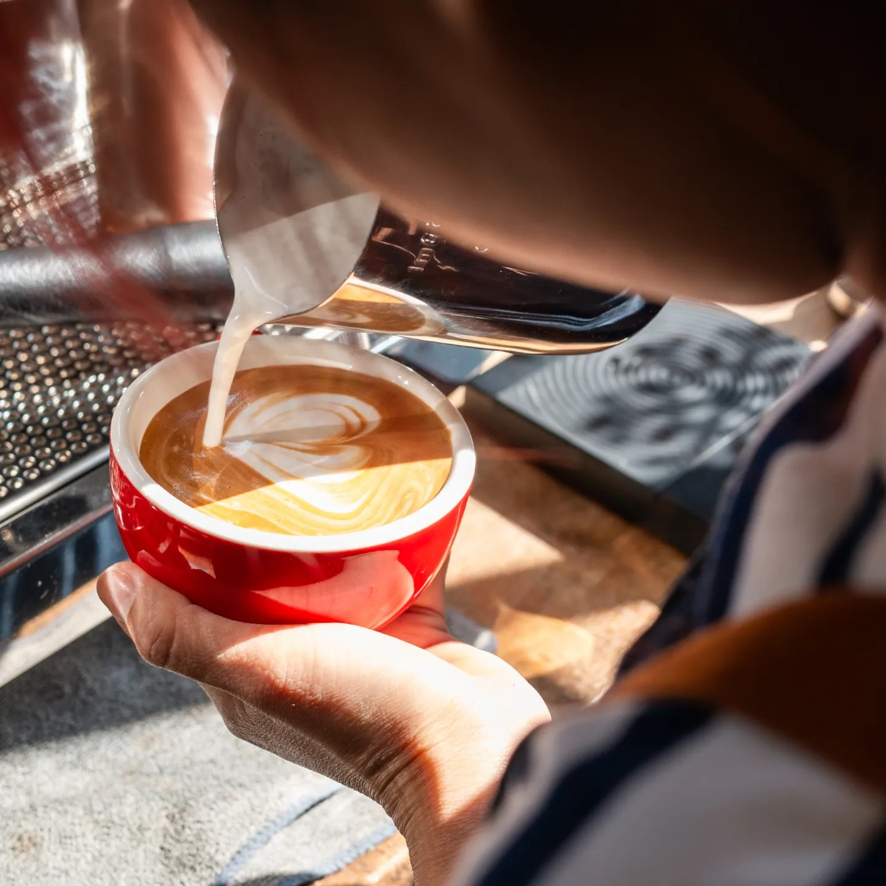
Time is Precious.เวลาว่าง · Waylawang Coffee·Baked·Craft · Since 2022 · คลองสามวา กรุงเทพฯ
Spend it at the Right Place.
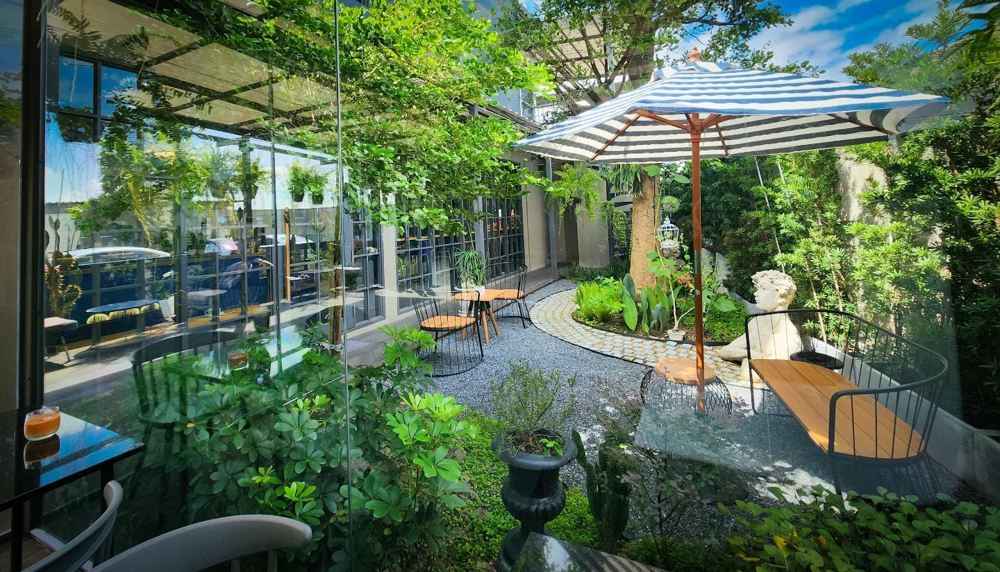
เวลาว่าง (Waylawang) คือคาเฟ่และร้านอาหารบรรยากาศ Glasshouse สวนร่มรื่น ย่านคลองสามวา รามอินทรา กรุงเทพฯ — เพราะเราเชื่อว่าทุกช่วงเวลาควรค่าแก่การหยุดพัก
ที่นี่ทุกอย่าง ทำเองด้วยมือ ด้วยวัตถุดิบคุณภาพดีคัดสรร ไม่ใส่สารกันเสีย — ตั้งแต่กาแฟ Specialty ขนมปัง Artisan เบเกอรี่ อาหาร ไปจนถึงงาน Craft
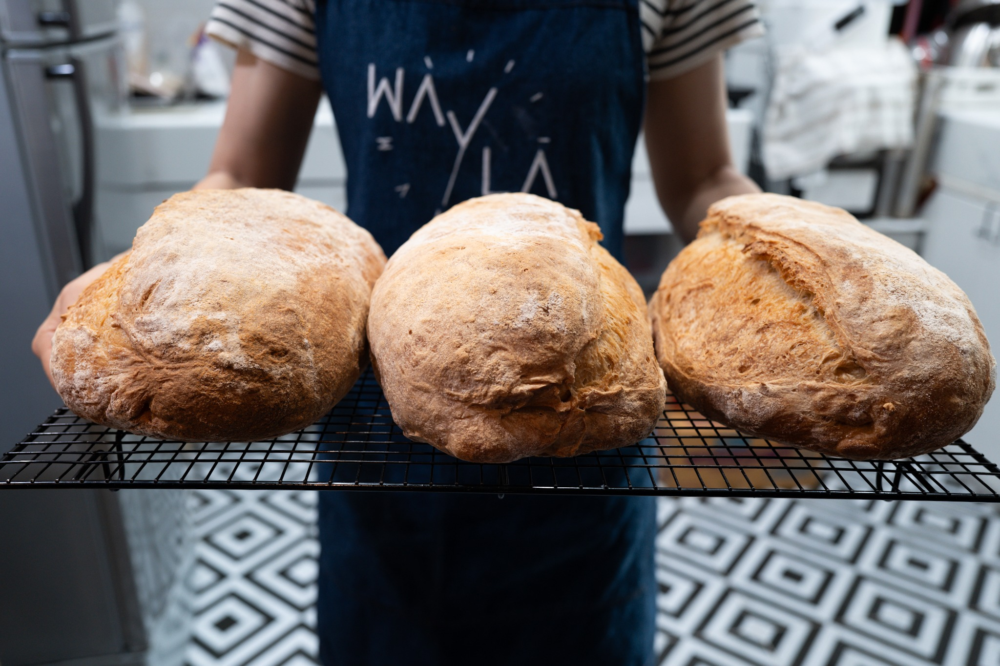
ขนมปัง Artisan อบสดใหม่ทุกเช้า เบเกอรี่โฮมเมดทำจากวัตถุดิบคุณภาพสูง ไม่ใส่สารกันเสีย ไม่ใช้ผงปรับปรุงคุณภาพแป้ง — ด้วยมือของเราเอง ทุกชิ้น ทุกวัน
ความใส่ใจในทุกกระบวนการคือสิ่งที่เราภาคภูมิใจ คุณจะสัมผัสได้ถึงความแตกต่างตั้งแต่คำแรกที่กัด
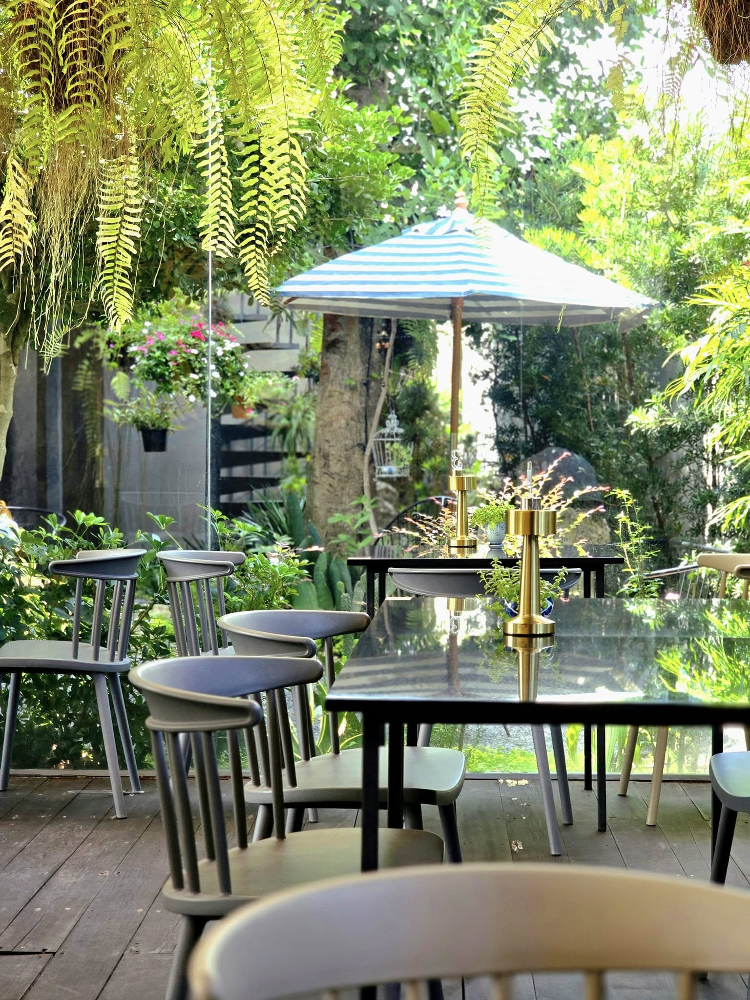
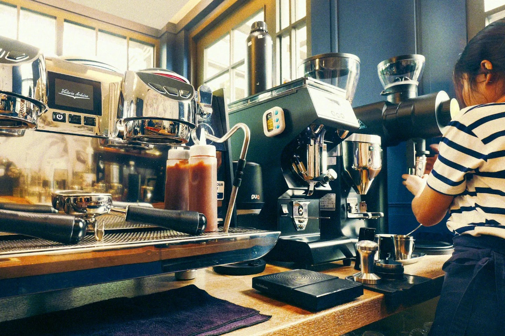
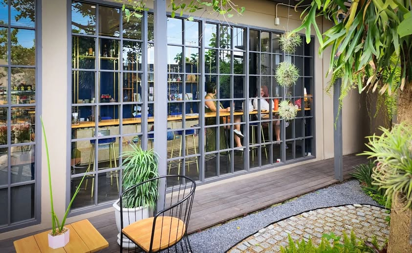
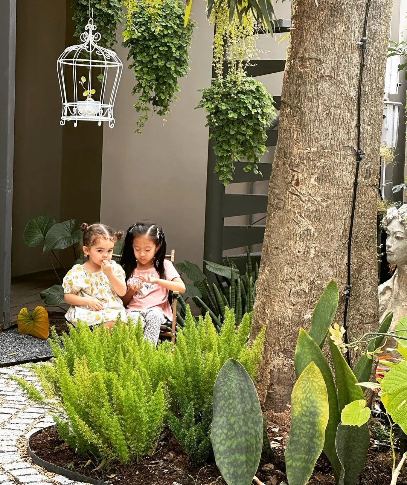
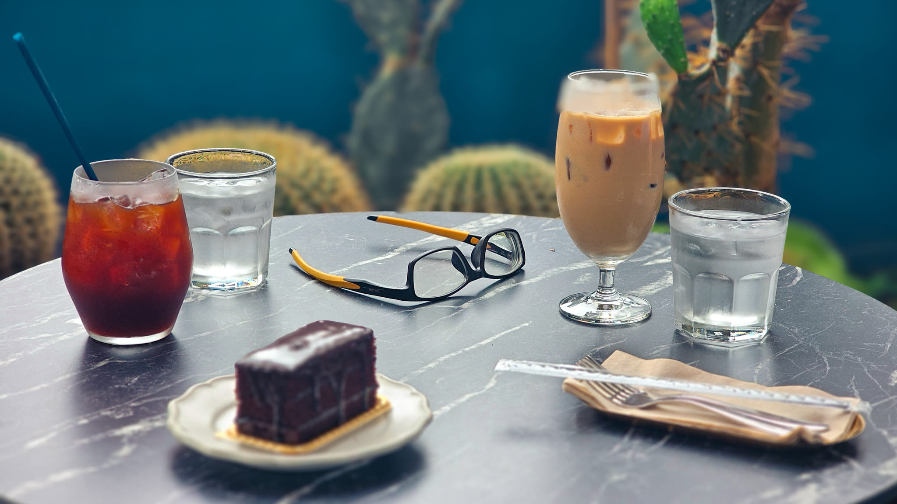
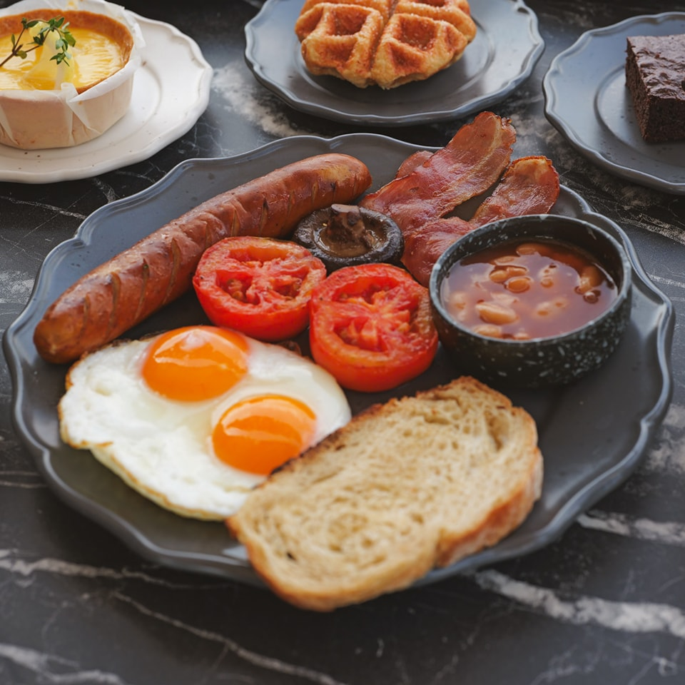
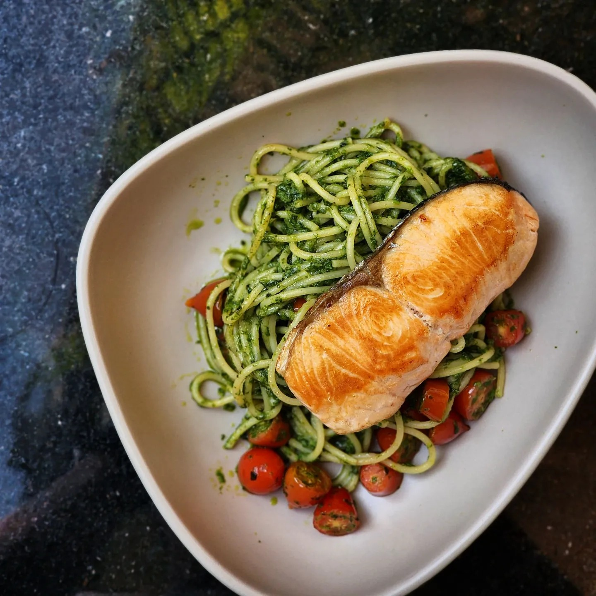
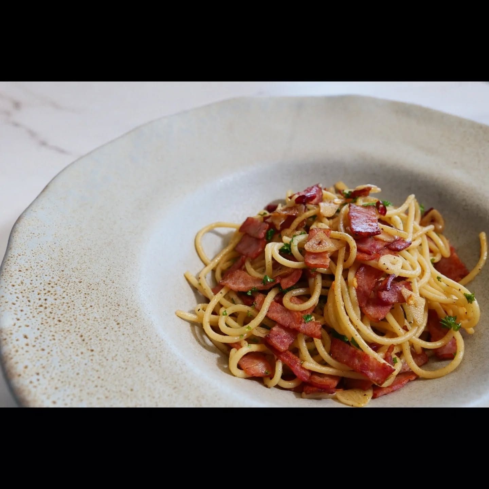
ขนมปัง Artisan ที่เวลาว่างทำเอง ไม่ใช่แค่เรื่องของรสชาติ แต่เป็นเรื่องของความตั้งใจ วัตถุดิบคัดสรร และความรับผิดชอบต่อทุกคนที่มากิน
เราเชื่อว่ากาแฟดีต้องเริ่มจากเมล็ดที่ดี ที่เวลาว่าง เราคัดสรรเมล็ดกาแฟ Specialty อย่างจริงจัง และชงด้วย Barista ที่ใส่ใจในทุกขั้นตอน
ถ้าคุณอยู่แถวรามอินทรา มีนบุรี หรือคลองสามวา และกำลังมองหาคาเฟ่บรรยากาศดี ทำงานได้ นั่งสบาย พร้อมอาหารและกาแฟคุณภาพ — เวลาว่างคือคำตอบ